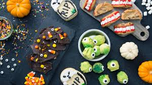

Fall
What a fascinating time of year fall is! The trees are turning into stunning shades of orange, red, and yellow, and shedding those beautiful leaves all over the ground. And who could forget the start of postseason baseball, football kicking off, and college basketball rolling around from September through November?! Quite possibly the most action-packed time of year for these reasons:
Haunted Houses
Spooky season strikes right in the heart of Fall. What better way to celebrate than with a little scarefest at your local haunted house? It might make it even better for the makers to have it based off of some horror classics such as "Paranormal Activity" or other amazingly scary but not as well known clips, such as "Sinister." Prepare for some sleepless nights!
Picking and Carving Pumpkins
Whoever came up with this idea was a weird genius. Carving pumpkins has been a autumn classic for, who knows how long. This is an entertaining activity that allows you to let your creativity flow out, and cut any shape or design into the side of this plump, round vegetable. Yet another activity that is a tradition for people of all ages!
Make Autumn-Based Treats
This time of year is filled with more seasonal goodies than any other! Whether this is making scrumptious caramel apples for Halloween parties, baking delicious pumpkin pie for a family Thanksgiving, or even bat-shaped cookies, the consumers will devour it with big-time satisfaction. Very entertaining for both the baker and the consumer!